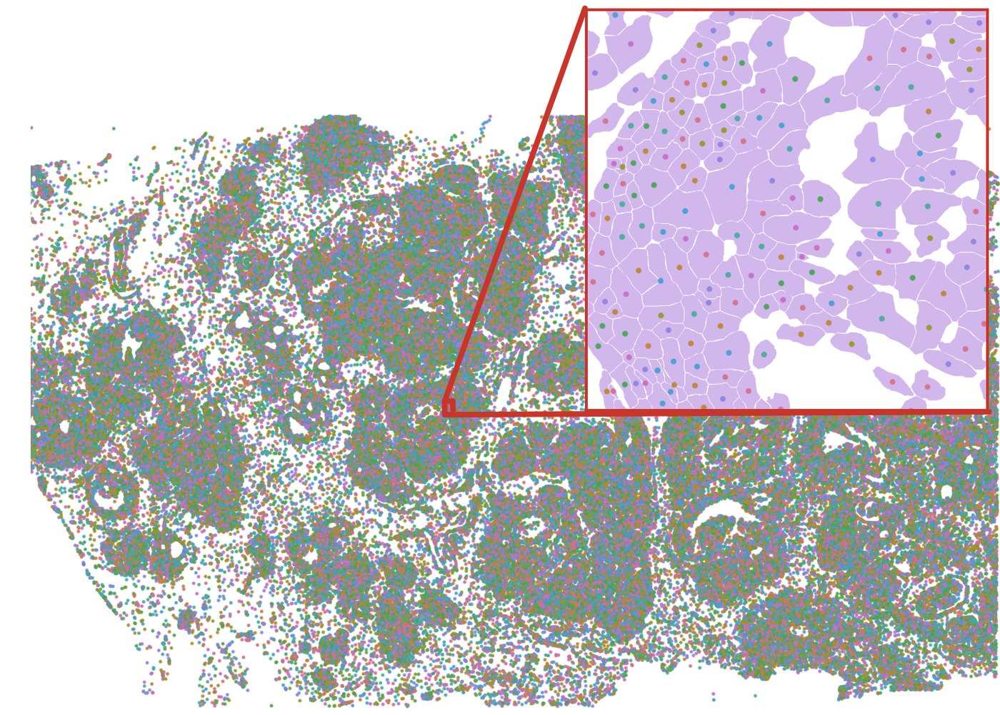
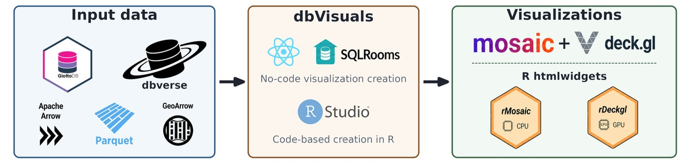

A 10x Atera breast cancer section in the R viewer, zooming from whole tissue down to individual transcripts inside cells, and how the pieces fit together.
Lead author - R package
dbVisuals
Interactive, hardware-accelerated visualization for spatial omics in R. Queries run in DuckDB, results travel as Arrow, and the browser draws them on the GPU, so a tissue with millions of cells stays explorable on a laptop.
- 2.5 s to draw 20 million points on a 16 GB laptop
- 16x faster than a static ggplot2 PNG at that size
- 1.3 GB peak R memory, against 5.0 GB for ggplot2
Repository opens with the release; manuscript in preparation